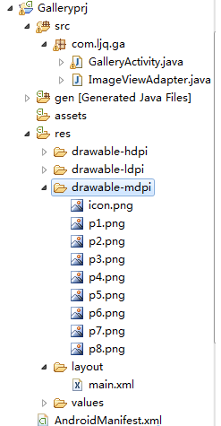

Android对Gallery的探究
Gallery组件主要用于横向显示图像列表，不过按常规做法。Gallery组件只能有限地显示指定的图像。也就是说，如果为Gallery组件指定了10张图像，那么当Gallery组件显示到第10张时，就不会再继续显示了。这虽然在大多数时候没有什么关系，但在某些情况下，我们希望图像显示到最后一张时再重第1张开始显示，也就是循环显示。要实现这种风格的Gallery组件，就需要对Gallery的Adapter对象进行一番改进。
以下通过Gallery模拟循环显示图像，在单击某一个Gallery组件中的图像时在下方显示一个放大的图像（使用ImageSwitcher组件）。
目录结构

main.xml布局文件
java代码：
<?xml version="1.0" encoding="utf-8"?><LinearLayout xmlns:android="http://schemas.android.com/apk/res/android
android:layout_width="fill_parent
android:layout_height="fill_parent
android:orientation="vertical" >
<!-- android:unselectedAlpha: 设置未选中的条目的透明度(Alpha)。该值必须是float类型，比如：“1.2”。 -->
<Gallery
android:id="@+id/gallery
android:layout_width="fill_parent
android:layout_height="wrap_content
android:layout_marginTop="30dp
android:spacing="10dip
android:unselectedAlpha="1.2" />
<ImageSwitcher
android:id="@+id/imageSwitcher
android:layout_width="fill_parent
android:layout_height="wrap_content
android:layout_marginTop="30dp" />
</LinearLayout>
GalleryActivity类
import android.app.Activity;import android.os.Bundle;
import android.util.Log;
import android.view.View;
import android.view.animation.AnimationUtils;
import android.widget.AdapterView;
import android.widget.Gallery;
import android.widget.ImageSwitcher;
import android.widget.ImageView;
import android.widget.AdapterView.OnItemClickListener;
import android.widget.AdapterView.OnItemSelectedListener;
import android.widget.LinearLayout.LayoutParams;
import android.widget.ViewSwitcher.ViewFactory;
public class GalleryActivity extends Activity implements ViewFactory {
private Gallery gallery = null;
private ImageSwitcher imageSwitcher = null;
int[] imageIDs = { R.drawable.p1, R.drawable.p2, R.drawable.p3,
R.drawable.p4, R.drawable.p5, R.drawable.p6, R.drawable.p7,
R.drawable.p8 };
@Override
public void onCreate(Bundle savedInstanceState) {
super.onCreate(savedInstanceState);
setContentView(R.layout.main);
imageSwitcher = (ImageSwitcher) findViewById(R.id.imageSwitcher);
// 设置ImageSwitcher组件的工厂对象
imageSwitcher.setFactory(this);
// 设置ImageSwitcher组件显示图像的动画效果
imageSwitcher.setInAnimation(AnimationUtils.loadAnimation(this,
android.R.anim.fade_in));
imageSwitcher.setOutAnimation(AnimationUtils.loadAnimation(this,
android.R.anim.fade_out));
gallery = (Gallery) findViewById(R.id.gallery);
ImageViewAdapter adapter = new ImageViewAdapter(GalleryActivity.this,
imageIDs);
gallery.setAdapter(adapter);
gallery.setOnItemSelectedListener(new OnItemSelectedListener() {
public void onItemSelected(AdapterView<?> parent, View view,
int position, long id) {
// 选中Gallery中某个图像时，在ImageSwitcher组件中放大显示该图像
imageSwitcher.setImageResource(imageIDs[position
% imageIDs.length]);
}
public void onNothingSelected(AdapterView<?> arg0) {
}
});
gallery.setOnItemClickListener(new OnItemClickListener() {
public void onItemClick(AdapterView<?> parent, View view,
int position, long id) {
Log.i("ljq", "parent=" + parent.getClass().getName()); // Gallery
Log.i("ljq", "view=" + view.getClass().getName()); // ImageView
Log.i("ljq", "position=" + position); // 1
Log.i("ljq", "id=" + id);// 1
Gallery gl = (Gallery) parent;
ImageView iv = (ImageView) view;
}
});
}
// ImageSwitcher组件需要这个方法来创建一个View对象（一般为ImageView对象）
// 来显示图像
public View makeView() {
ImageView imageView = new ImageView(this);
imageView.setBackgroundColor(0xFF000000);
imageView.setScaleType(ImageView.ScaleType.FIT_CENTER);
imageView.setLayoutParams(new ImageSwitcher.LayoutParams(
LayoutParams.FILL_PARENT, LayoutParams.FILL_PARENT));
return imageView;
}
}
ImageViewAdapter自定义适配器
java代码：
import android.content.Context;import android.view.View;
import android.view.ViewGroup;
import android.widget.BaseAdapter;
import android.widget.ImageView;
import android.widget.LinearLayout;
public class ImageViewAdapter extends BaseAdapter {
private int[] imageIDs = null;
private Context context = null;
public ImageViewAdapter(Context context, int[] imageIDs) {
this.context = context;
this.imageIDs = imageIDs;
}
// 用于返回图像总数，要注意的是，这个总数不能大于图像的实际数（可以小于图像的实际数），否则会抛出越界异常。
public int getCount() {
// 优化一
// return imageIDs.length;
return Integer.MAX_VALUE;
}
public Object getItem(int position) {
return imageIDs[position];
}
public long getItemId(int position) {
return position;
}
// ScaleType的用法
// CENTER/center 按图片的原来size居中显示，当图片长/宽超过View的长/宽，则截取图片的居中部分显示
// CENTER_CROP/centerCrop 按比例扩大图片的size居中显示，使得图片长 (宽)等于或大于View的长(宽)
// CENTER_INSIDE/centerInside 将图片的内容完整居中显示，通过按比例缩小
// 或原来的size使得图片长/宽等于或小于View的长/宽
// FIT_CENTER/fitCenter 把图片按比例扩大/缩小到View的宽度，居中显示
// FIT_END/fitEnd 把 图片按比例扩大/缩小到View的宽度，显示在View的下部分位置
// FIT_START/fitStart 把 图片按比例扩大/缩小到View的宽度，显示在View的上部分位置
// FIT_XY/fitXY 把图片 不按比例 扩大/缩小到View的大小显示
// MATRIX/matrix 用矩阵来绘制
public View getView(int position, View convertView, ViewGroup parent) {
ImageView iv = new ImageView(context);
// 优化二，通过取余来循环取得imageIDs数组中的图像资源ID，取余可以大大较少资源的浪费
iv.setImageResource(imageIDs[position % imageIDs.length]);
iv.setScaleType(ImageView.ScaleType.CENTER_INSIDE);
iv.setLayoutParams(new LinearLayout.LayoutParams(77, 77));// 把图片缩小原来的60%
return iv;
}
}